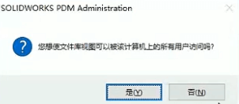
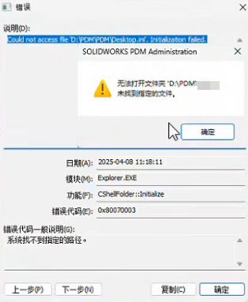

PDM添加本地视图失败
问题
创建本地视图时提示：已附加：遗失信息
原因：常发生于不正确删除本地视图后，再次创建本地视图，注册表有残留。通过修改注册表残留信息可以解决该类问题。
方法1
1、客户端按win + r 键，输入regedit，打开注册表。
2、定位到以下路径删除对应库名的文件夹（路径位置和我们创建时选择的用户使用有关）
- 创建时选“否”时，在注册表HKEY_CURRENT_USER里找
- 创建时选“是”时，在注册表HKEY_LOCAL_MACHINE里找
1 | 【计算机\HKEY_LOCAL_MACHINE\SOFTWARE\SolidWorks\Applications\PDMWorks Enterprise\Databases\<库名>】 |
1 | 【计算机\HKEY_CURRENT_USER\Software\SolidWorks\Applications\PDMWorks Enterprise\Vaults\<库名>】 |
无法打开文件夹
无法打开文件夹:”xxx”，未找到指定的文件
方法
切换到管理员权限操作生成本地视图即可
